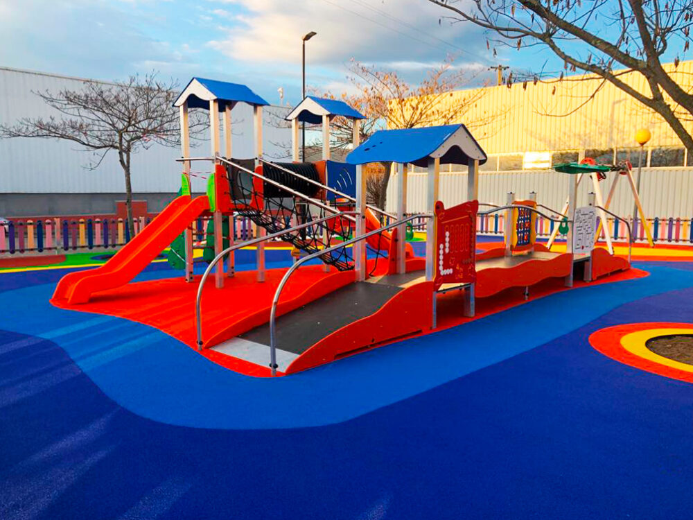
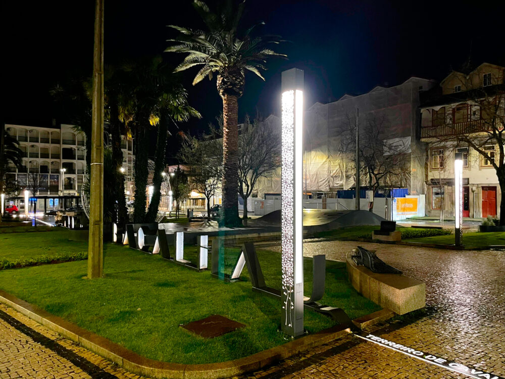
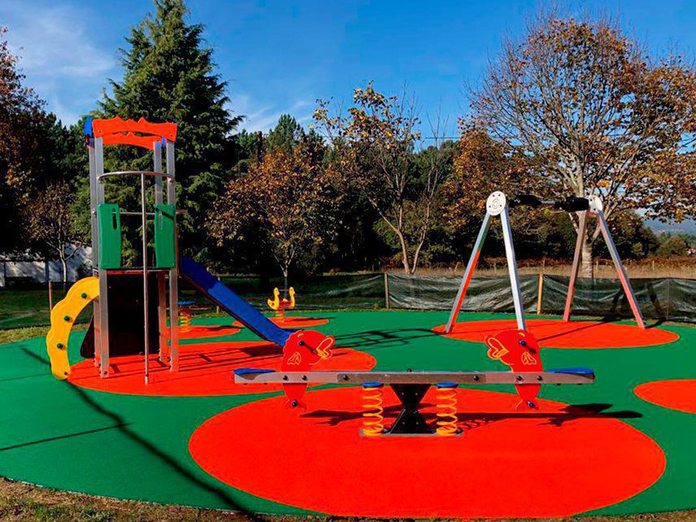

Parque Infantil de Eiras
Eiras tem o primeiro parque infantil completamente inclusivo de Coimbra. Trata-se de um projeto de remodelação e requalificação do Parque Infantil das Eiras que é financiado pela Câmara Municipal de Coimbra e realizado com equipamentos da BriCANTEL.
O Jardim do bacalhau Chaves
O Jardim do Bacalhau (Chaves ) data da década de 30 e sofreu várias obras de remodelação. Antes chamava-se Terreiro do Cavaleiro, mas deixou esse nome para Jardim do Bacalhau, embora muitos ainda lhe chamem Cavalaria.


Vila Meã
A freguesia de Vila Meã, no concelho de Vila Nova de Cerveira (distrito de Viana do Castelo ), já tem novos jogos infantis fornecidos pela BriCANTEL, para que as crianças 🧒👦 possam começar o ano de 2023 de forma divertida.